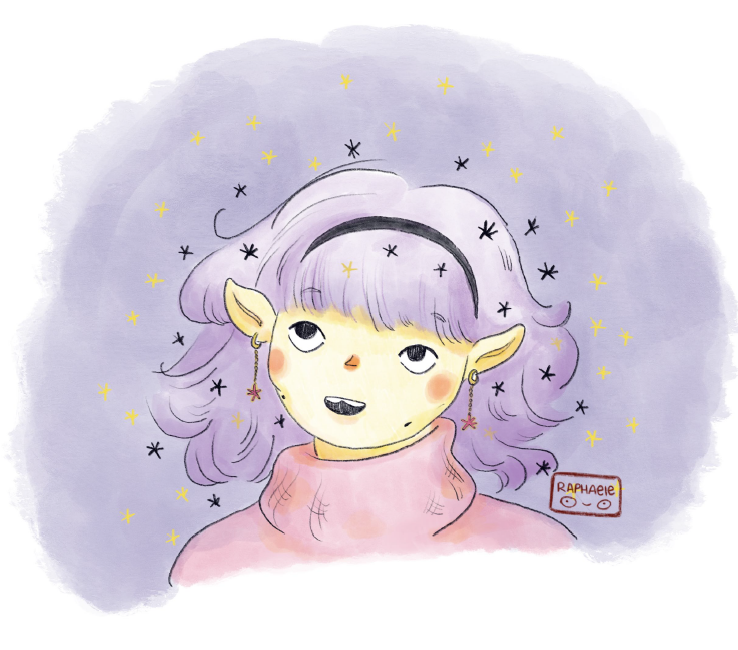

Raphaële Slimane
Artworks
Blog
About
Trier par
Ordre par défaut
Date - Le plus ancien
Date - Le plus récent
Titre
Couvertures du New Yorker et histoire du rose
6 déc. 2025
Reproduire Berthe Morisot et écouter des livres audio en dessinant
29 nov. 2025
Balade dessinée, Sargent et la peinture sur verre
22 nov. 2025
Les arts libanais et une dose de Nora Ephron
15 nov. 2025
Parce que Marjane Satrapi est drôle
8 nov. 2025
Berthe Weill et Charlotte Salomon
1 nov. 2025
Le sommet des dieux et autres histoires d’alpinisme
25 oct. 2025
Musée Carnavalet et film noir
18 oct. 2025
Writing about scent
11 oct. 2025
On urban sketching
4 oct. 2025
Portraits of women
27 sept. 2025
Lists, lists, lists
20 sept. 2025
Notebook flipthroughs, Hockney and learning how to make a statue
13 sept. 2025
Van gogh, Auvers sur Oise and Jo
6 sept. 2025

Bienvenue
4 mars 2025
Aucun article correspondant
Retour au sommet